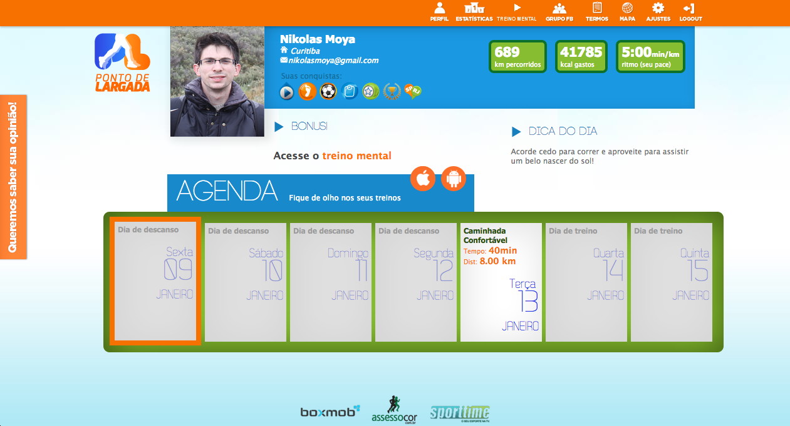

Volumetric Image Segmentation for Visualization and Analysis
VISVA is the expected output from my interactive segmentation study. Given a 3D image, it is possible to visualize the volume slices in the three axes. With the insertion of labeled markers and the execution of the algorithm, one or multiple objects are segmented and rendered in the lower right corner. It is also possible to smooth the label image without the generation of disconnected components from the user's markers.
2014, University of Campinas
Technologies: C, C++, wxWidgets
SQL Killer
SQL Killer is a game developed in a 48-hour game jam. The game's objective is to protect the leader (player with a golden crown). We were challenged to build a platform-independent multiplayer game during the event. There is only one active game session, in which everyone is playing collaboratively. The leader gets slower each time he is hit and the amount of enemies increases as the player progress through the levels.
2014, Global Game Jam
Technologies: Node.js, socket.io, HTML5.
Ponto de Largada
Ponto de Largada (Starting Point, in english), was developed with a team of four people (a software engineer (me), a designer, a personal trainer and a tester). Its objective is to recommend personalized running exercises based on the runner's physical condition (i.e. height, weight, age, family history, etc.).
I was responsible for all server-side programming and auxiliary tools to keep the platform running. The experience acquired with this project was enormous.
Ponto de Largada is online since July 2012 and thousands users are already registered.
